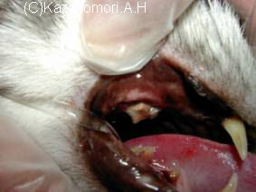

** Topic 2009年 2月**

●歯周病
年齢を重なるにつれて、多くなってくるのが、『歯周病』です。
歯を磨かないんだから、汚くなってくるのは当たり前！と、おもわれるかもしれませんが、とんでもありません！
食べてるから、元気だから、と見逃さないでください。
ヒトでは、歯周病原菌が心臓病、肝障害、腎障害の原因菌になることははっきりとされています。そのため、細かなケアーが推奨されており、集団検診を含めて早期治療がされているかと思います。
動物も、同じことだと思います。獣医さんの中でも、人と同じような認識のもとに、治療をされている先生が多くなってきているようです。
動物の歯周病の治療方法も、さまざまにあります。
抜歯する場合もあります。きれいに歯垢歯石の除去を行い、歯周炎を薬を使って治す場合。失ってしまった歯周組織を再生させ、治療する場合、などなど。
生涯おいしく口でご飯が食べれるよう、個々にあった治療を選ばれることも、大切だと思われます。
治療の第一歩！それは、まず、飼い主さんが、ペットのお口のにおいを嗅いであげてください。一本でも、傷んだ歯があると、必ず匂いが出てきます。右側と左側でも違うんですよ。よだれが多くなったり、また、食べ方が変わってくることもあります。
『歯が痛―い！』と、言えない動物の代わりに、お口のにおい、ちょっと気にかけてみてください。
治療例：ミニチュアダックス
左；治療前（茶色の固い歯石が全部の歯牙についています。歯肉も赤く腫れています）
右；治療後（歯石をきれいに除去、歯周炎治療の軟膏を使い、治療しました）
治療例：ミニチュアダックス
非常に状態の悪い歯周病です。ほとんど、口の中が歯石と歯垢に埋め尽くされてしまっている感じですね。レントゲン検査ののち、病態が進んでしまっている歯は、抜歯をして治療をしました。
治療例：雑種ネコ
口の中に痛みがある様子で、来院しました。奥歯（第4前臼歯）に歯石がついており、歯肉炎がありました。詳しい検査ののち、抜歯をして治療しました。
一口に、歯周病といっても、さまざまです。
まず、クンクン臭いをかいで、気になったら、早期に病院にかかり、治療を始められることをお勧めします！！


